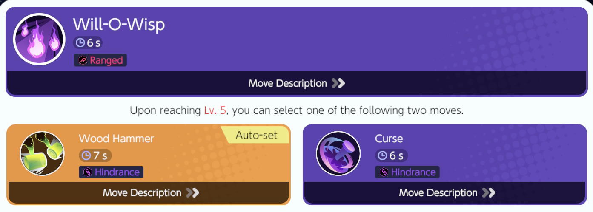
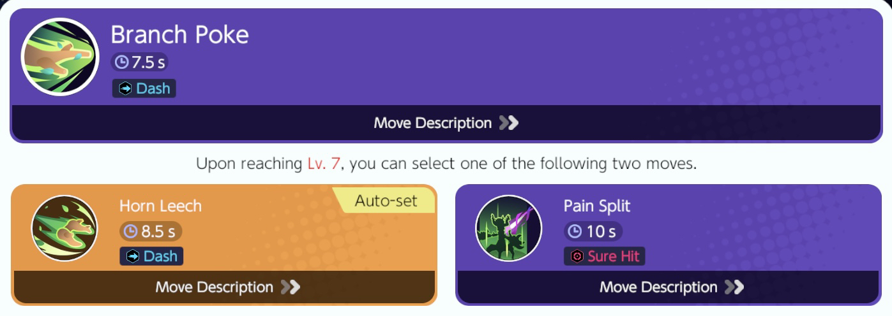
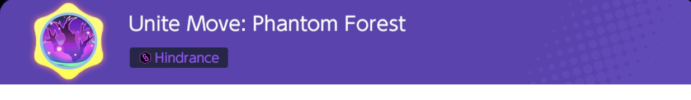

Trevenant Moveset
Trevenant Move 1

Trevenant Move 2

Trevenant Unite Move

-----------------------------------------------Uproot your enemies! -----------------------------------------------
Trevenant is
Additional Information on Trevenant
Game8 Trevenant Guide